本文开发内容
pytest 登场！本文将在 Django 中引入 pytest，原理是先执行 tep startproject 命令创建 pytest 项目文件，然后从数据库中拉取代码写入文件，最后调用 pytest 命令运行用例。为了提高运行效率，用例运行是并行的，采用了多线程和多进程，两个都有，这在最后有个单独小结进行比较完整的说明。因为用例运行是异步的，所以前端并不知道什么时候执行完才能拿到运行结果，可以发多个 HTTP 请求轮询，但这种方式并不优雅，本文将采用 WebSocket 来实现用例结果查询。具体内容为：
cases/<int:pk>/run运行用例接口ws/teprunner/cases/<int:case_id>/result/用例结果查询接口projects/<int:pk>/export下载项目环境接口- 前端添加 WebSocket 请求
知识点涉及有点多：tep、pytest、同步、异步、多线程、多进程、回调函数、WebSocket、长连接、全双工、ASGI、WSGI、打 ZIP 包、文件字节流传输。
编写后端代码
编辑 requirements.txt，添加 tep 和 channels：
tep==0.6.9
channels==3.0.3
tep 是用来创建 pytest 项目的，channels 是用来实现 WebSocket 的。
编辑 teprunner/urls.py 文件，添加 HTTP 路由：
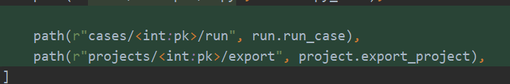
首先实现 run 接口，新建 teprunner/views/run.py 文件：
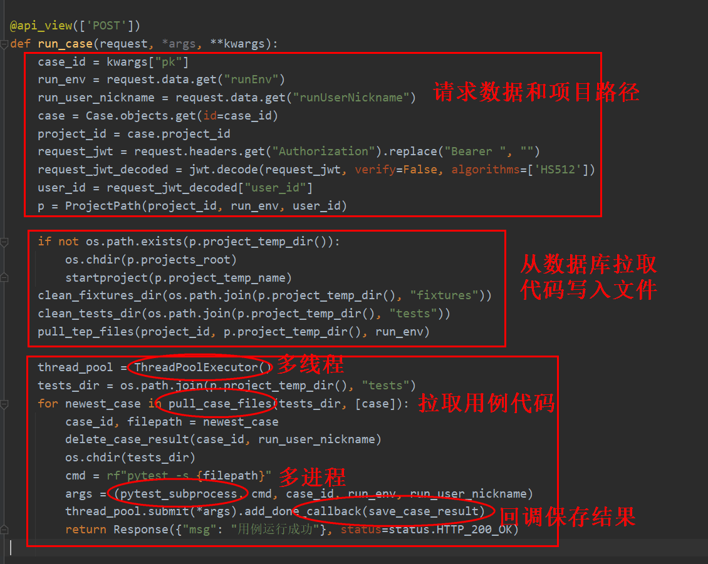
这是运行用例的主体流程：
- 第一步从请求中获取用例 id、运行环境、运行人，这里演示了获取 user 数据的两种方式：接口传参和从 token 中解析。然后根据 project_id，run_env，user_id 定义了 pytest 项目的路径。
- 第二步使用 tep startproject 创建项目文件，清空 fixtures 和 tests 目录，目的有两个：一是清掉 tep 默认 fixtures 和示例 cases，防止对平台产生干扰；二是保证每次运行目录都是干净的，就不用单独去处理前端手动删掉 fixture/case 后，文件残留的问题。然后从数据库中拉取环境变量、fixtures 等数据更新文件。
- 起多个线程，分别执行用例，执行前先拉取用例代码写入文件，这里是单条用例运行，之所以要用 for 循环，是因为用例迟早是要批量执行，在设计时就考虑到，避免后面走弯路。然后删掉数据库运行结果，通过 subprocess 起子进程调用 pytest 命令，最后在线程的回调函数中根据 pytest_result 保存用例结果到数据库中。
注意！run_case 接口不会直接返回结果，前端是用 WebSocket 来查询结果的。
图中很多函数和类是我封装的，一个一个拆解来看：
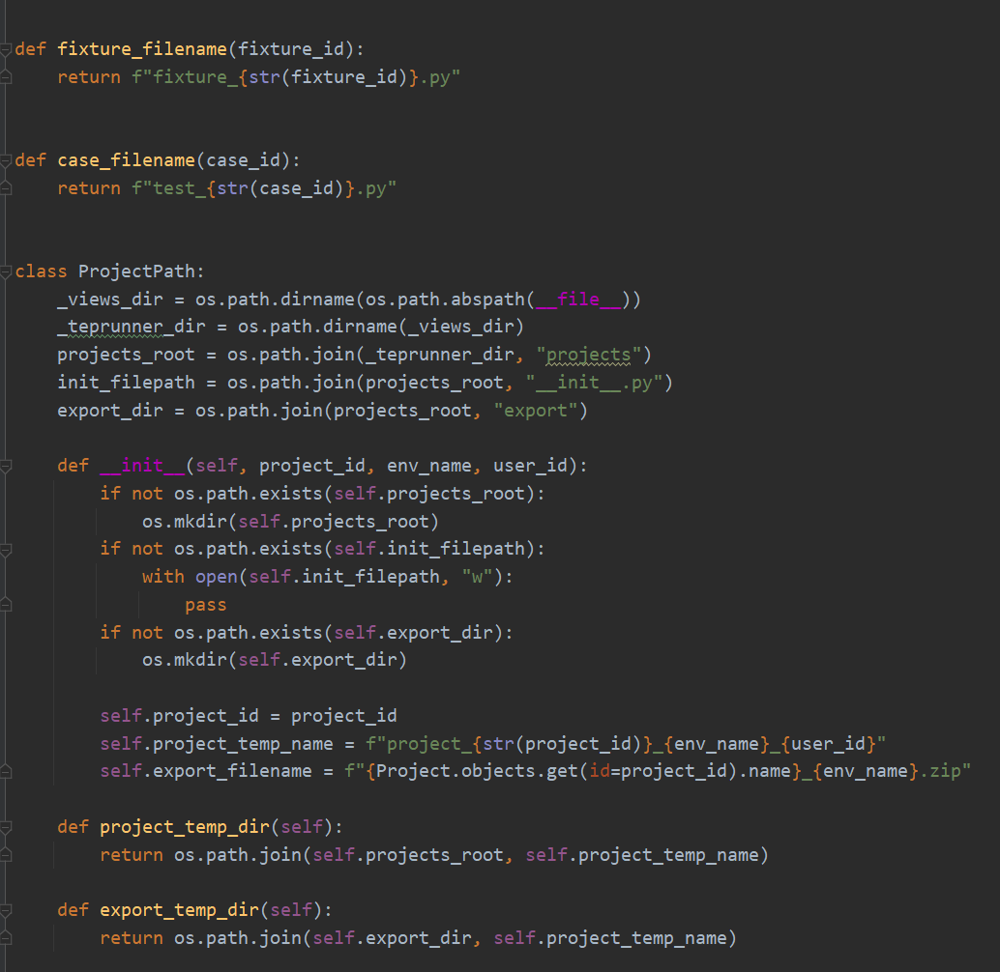
这里定义了 Django 中存放 pytest 项目的目录文件，project_temp_name 是按照 project_id、env_name、user_id 来划分的，目的是让运行目录尽量隔离开来，不要相互影响，借鉴了 Docker 容器的思想，可以把这个目录视为用例运行容器。继续：
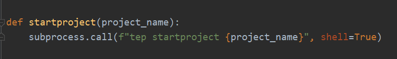
tep startproject 命令创建 pytest 项目，pytest 文件有特定组织方式，比如 conftest.py 文件等，tep 提供了脚手架一条命令创建项目结构。继续：
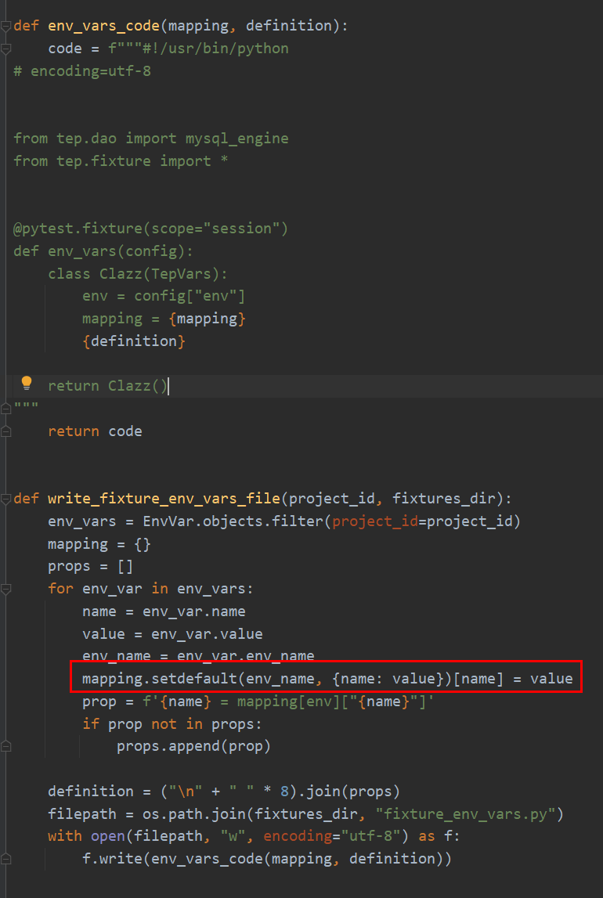
fixture_env_vars.py 里面存放了 tep 的环境变量，Django 这里每次都从数据库的 env_var 表中获取数据，动态更新到文件里面。setdefault 是个骚操作，这行代码等价于：
if env_name in mapping.keys():
mapping[env_name][name] = value
else:
mapping[env_name] = {name: value}
继续：
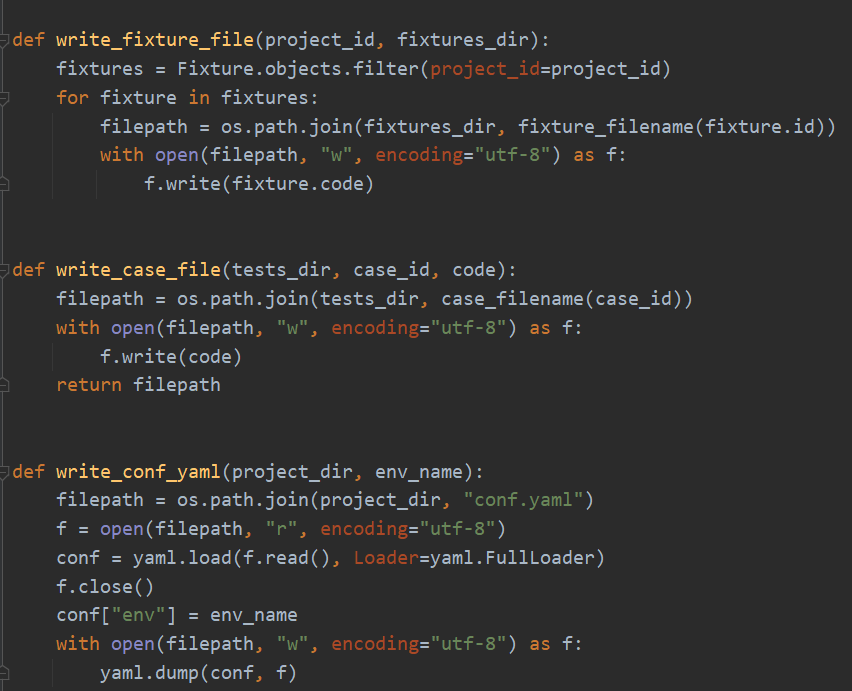
分别从数据库中获取代码写入 fixture 文件和 case 文件，把前端传参的运行环境写入 conf 文件。继续：
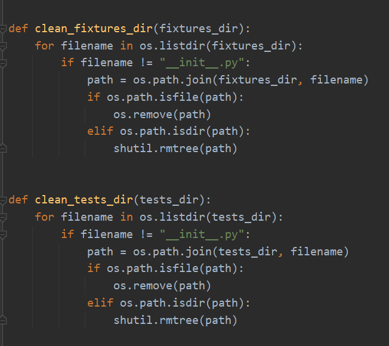
清空 fixtures 目录，清空 tests 目录。继续：
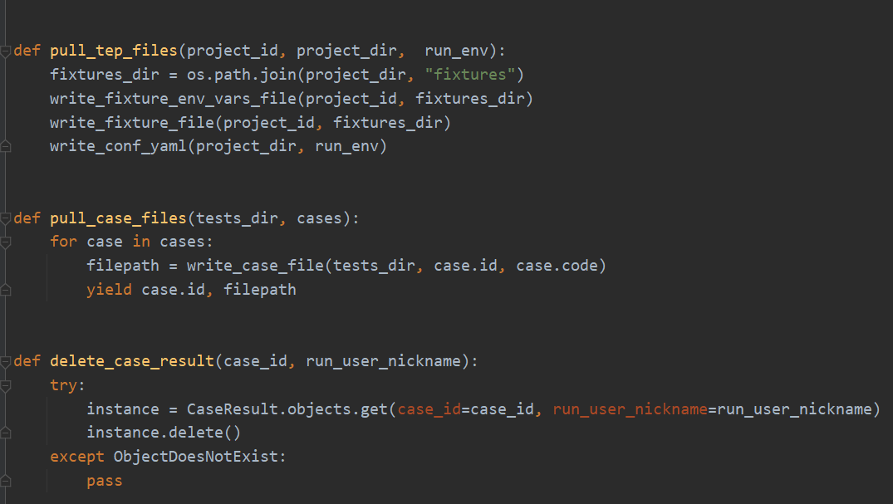
pull_tep_files 是写环境变量，写 fixture 文件，写 conf 文件三步的集合，复用代码。pull_case_files 通过 yield 定义为了生成器，它和 list 的区别是不会一次把所有数据产生到内存中，而是每次用的时候产生一次，节约内存开销。delete_case_result 用于运行用例前删除 case_result 表里面已经存在的这条用例的数据。case_result 按照用例 id 和运行人存的多条，每个运行人都有一条属于自己的运行数据，避免数据相互干扰，返给前端的是运行时间最新的那一条！
继续：
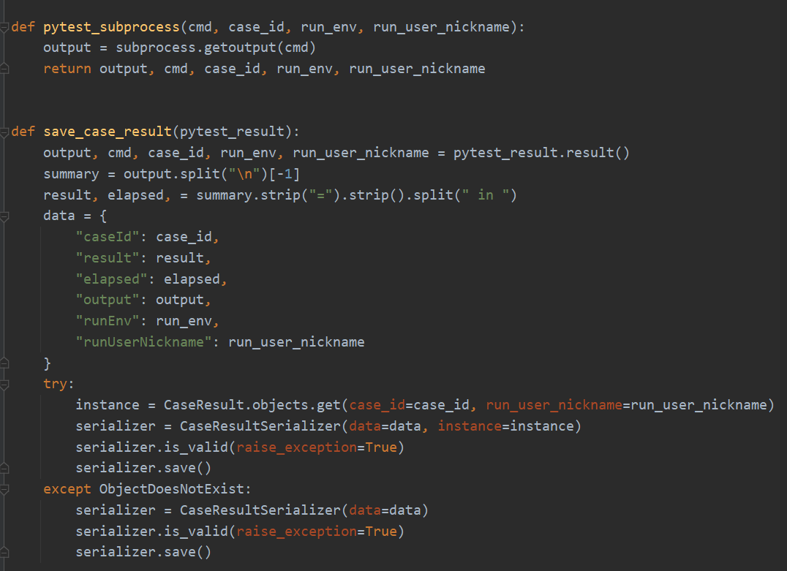
subprocess.getoutput()可以执行 shell 命令并返回执行结果，这里就拿到了 pytest 控制台日志，这个函数是在线程池中异步执行的，主线程不能一直等待它执行，所以需要有个回调函数，等它自己执行完了去调用这个回调函数。save_case_result 就是个回调函数，它的入参 pytest_result 等于 pytest_subprocess 函数返回的元组，拆包后就能拿到 outout、cmd、case_id、run_env、run_user_nickname，从中解析出 result 和 elapsed 后，就可以存库了，无则新增，有则更新。
run 接口做好了，再接口做下载环境接口，编辑 teprunner/views/project.py：
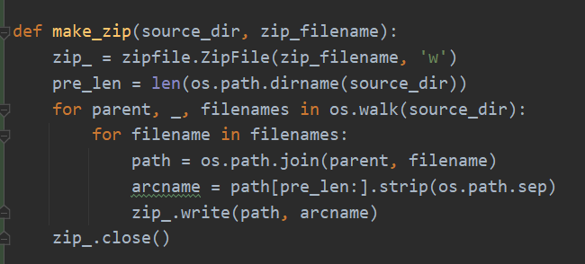
打包的代码是从网上找的，把 source_dir 打包成 zip_filename 文件。继续：
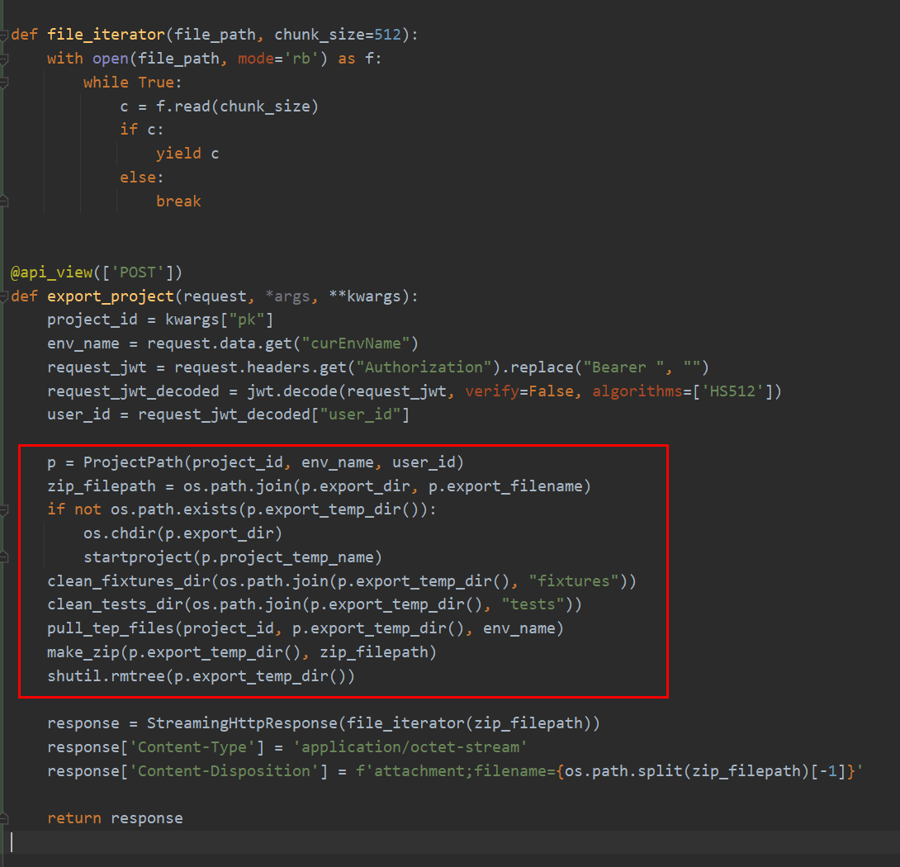
file_iterator 函数也是网上找的，把二进制文件读取为字节流，传输给前端，需要使用 StreamingHttpResponse 对象并添加Content-Type和Content-Disposition。红框的代码跟 run 接口类似，区别在于目录换成了 export_temp_dir()，且不包含测试用例，生成 zip 文件后会把导出临时目录删掉，防止冲突。
两个 HTTP 接口做完了，开始实现 WebSocket。WSGI 一种网关接口，是 Python 为了解决 Web 服务器端与客户端之间的通信问题而产生的，不支持 WebSocket；ASGI 是 WSGI 的扩展，意思是异步网关接口，支持 WebSocket。编辑 teprunnerbackend/urls.py 文件：
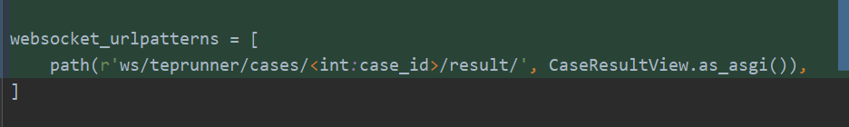
添加了 WebSocket 路由。编辑 teprunnerbackend/asgi.py 文件：
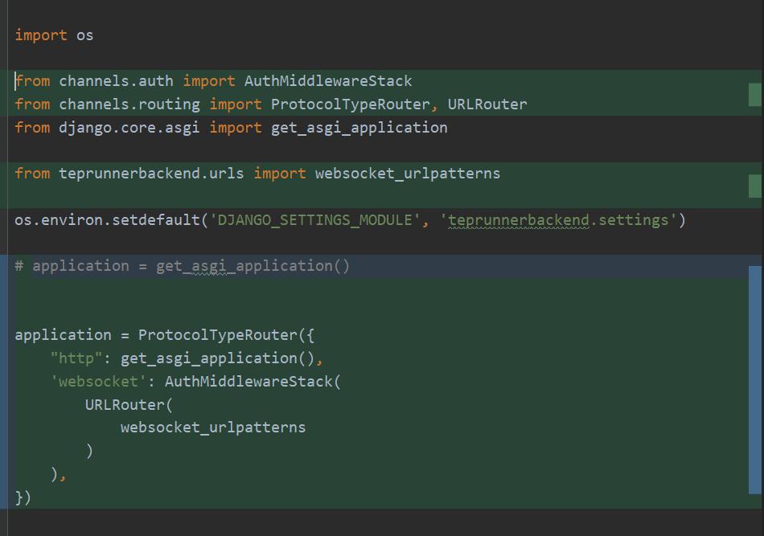
添加 websocket 的 URLRouter，http 保持默认。编辑 teprunnerbackend/settings.py 文件：
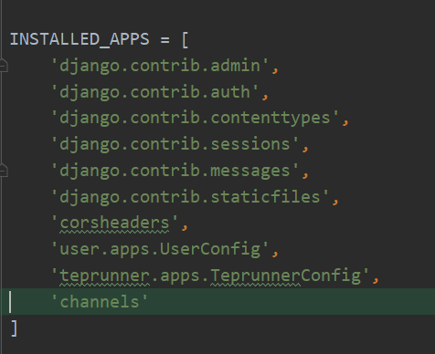
INSTALLED_APPS 中添加 channels，继续：
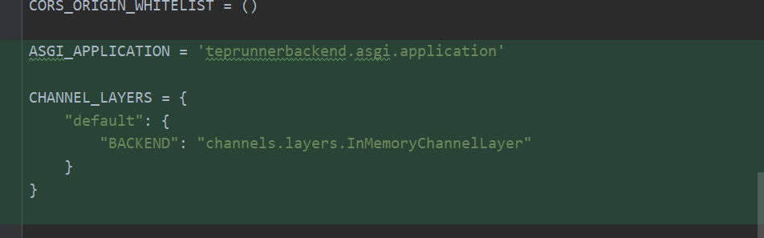
添加 ASGI 应用配置和 CHANNEL 配置。CHANNEL_LAYERS 是一种通信系统，允许多个 Consumer 实例之间互相通信，以及与外部 Django 程序实现互通。学习版这里使用的 InMemory。
生产中不建议使用 InMemory，可能会有性能问题，而是应该使用 Redis：
CHANNEL_LAYERS = { "default": { "BACKEND": "channels_redis.core.RedisChannelLayer", "CONFIG": { "hosts": [("127.0.0.1", 6379)], }, }, }
最后，编辑 teprunner/views/case.py 文件：
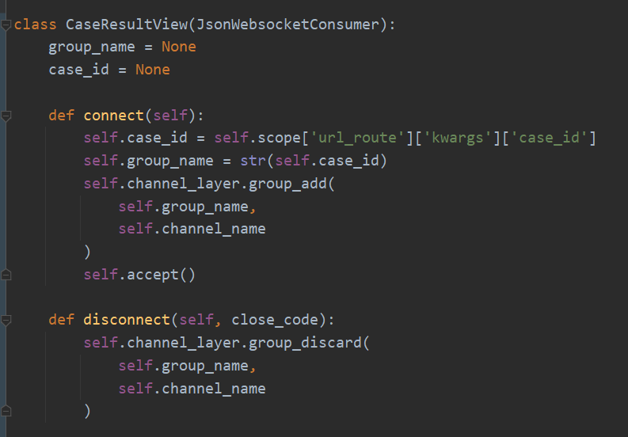
CaseResultView 是继承了 JsonWebsocketConsumer，可以接受和发送 JSON 的 WebSocket 消费者。这里只是简单使用了 channels 来实现用例结果查询，connect()在建立连接时，从 url 中拿到 case_id，作为房间名，在 channel_layer 中创建了房间。disconnect()在断开连接时，把房间从 channel_layer 中移除。继续：
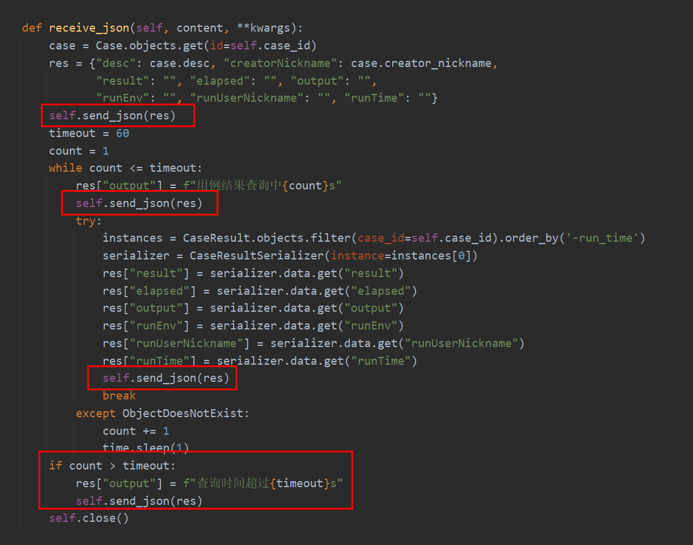
receive_json 是在后端收到前端消息时调用的。WebSocket 是长连接，在建立连接后，不会断开，可以继续传递消息；WebSocket 是全双工，不只是客户端向服务器发消息，服务器也能向客户端发消息。这里服务端会给客户端发 4 次消息：
- 第 1 次，返回用例描述和用例创建人。
- 第 2 次，准确说会有多次，当查询数据库没有结果时，会返回计时，前端效果是计时从 1s 递增。
- 第 3 次，如果查询数据库有结果，返回用例结果。
- 第 4 次，60s 后还没有结果，返回超时信息。
其中 CaseResult 是用order_by('-run_time')取的最新一条。最后的 self.close()不是必须的，这里加上是因为频繁建立和关闭连接时，如果只是前端发起 close()，后端可能会关闭不及时导致 channels 报错，后端也加上 close()能一定程度上避免报错。
编写前端代码
新建.env文件：
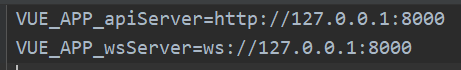
添加 HTTP 和 WebSocket 后端地址，里面以键值对的形式写出环境变量，键名需要以 VUE_APP_ 开头。vue-cli 打包时会自动寻找这些环境变量，注入到编辑上下文环境中。编辑 vue.config.js 文件：
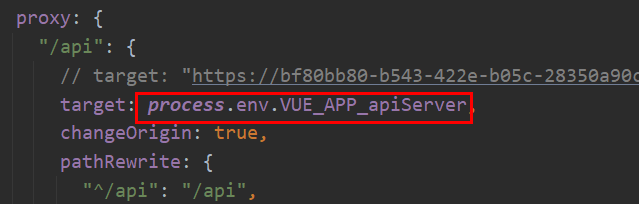
把 target 替换成.env里面的环境变量。
编辑 views/teprunner/case/CaseResult.vue 文件：
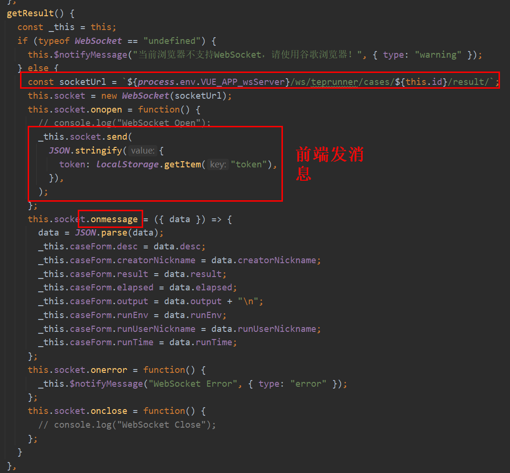
socketUrl 用到了.env中的环境变量。通过 new WebSocket 创建 socket 对象，使用 send()发送消息，传了 token。onmessage 接收后端发过来的消息。
每次打开弹窗建立 WebSocket 连接，每次关闭弹窗断开 WebSocket 连接：
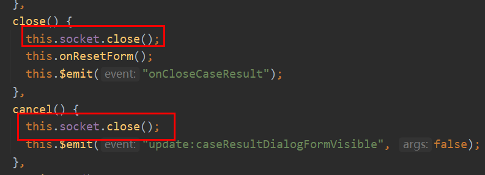
前后端是在以用例 id 作为房间名的房间中，相互传递消息的。多个浏览器的数据不会互串，因为 Django Server 默认是多线程！
多线程和多进程
每次浏览器发起请求到 Django Server，Django 都会新起一个线程来处理，这是异步的，意味着多个浏览器连续发多个请求，每个请求的上下文都是独立的，也不会阻塞等待。
如果 Server 不是用的 Django Server 而是用的 Nginx，需要结合 WSGI 才能实现多线程。
在 WebSocket 通信时，每个房间都是单个线程自己创建的，数据不会互串，具体原理还没有研究，这个结论我是测试过的：修改后端代码返回随机值，多个浏览器打开同一个 Case 的结果，后打开的 Case 结果并不会影响已经打开的 Case 结果。
同理，多个浏览器同时运行用例，默认它们就是并行不是串行的，不会存在等待执行的情况，从前面代码可以知道，pytest 命令是用 subprocess 子进程方式调用的，为了看到效果，我找了一个比较慢的 Case，用多个浏览器运行了一下：
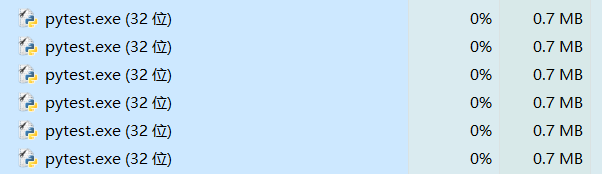
赤裸裸的多进程！pytest 多进程靠谱么？靠谱，因为 pytest-xdist 就只支持多进程，以下是截取的官方 Github 的 Issue：
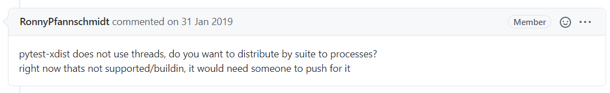
threads 是线程，processes 是进程，pytest-xdist 没有使用线程。
如果想要多台机器分布式运行用例，就要用 pytest-xdist。
批量运行用例的情况略有不同，当批量运行用例时，前端只会有一个浏览器发起一次请求，让后端拿多个 Case 来运行，Django 只会分配一个线程来处理这个请求！如果我们在这个 View 里面只是 for 循环去运行用例，那么这些用例一定是串行的：虽然是用的 subprocess，但是启用 subprocess 的只有这一个线程，必须前一个执行完，才启动下一个。这就是为什么要再定义线程池的原因：
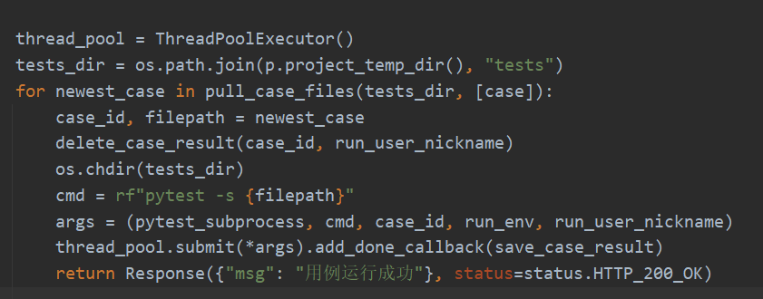
本文还没有开发批量运行用例的模块，但后端已经实现了这个扩展，只需要再生成一个 CaseList 就能跑批量了。
小结
本文把 pytest 引入到了测试平台中，已经可以跑 Case 了。文章涉及到的知识点有点繁杂，对我来说这一版也做了不少优化，反复实践和测试，参考资料加了很多。完整源码请到 GitHub 上获取，按照 README 命令就能直接把前后项目跑起来看效果。做到这里，teprunner 测试平台已经不是个花架子了，而是有着 pytest 内核引擎驱动的真测试平台。它一定不是你做测试平台的终点，但也许能成为做测试平台的起点，也许能成为撬动地球的支点。
参考资料：
前端源码 https://github.com/dongfanger/teprunner-frontend
后端源码 https://github.com/dongfanger/teprunner-backend
https://github.com/pytest-dev/pytest-xdist/issues/409
https://blog.csdn.net/weixin_42329277/article/details/80741589
https://www.cnblogs.com/xiao987334176/p/14361893.html
https://juejin.cn/post/6844904195758243848
https://segmentfault.com/q/1010000022975655
https://channels.readthedocs.io/en/stable/topics/channel_layers.html